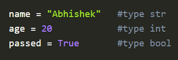
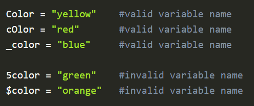
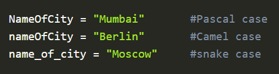
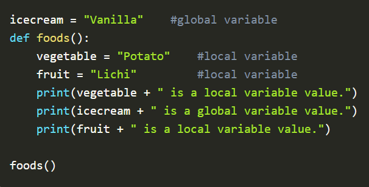
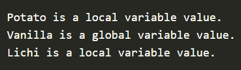
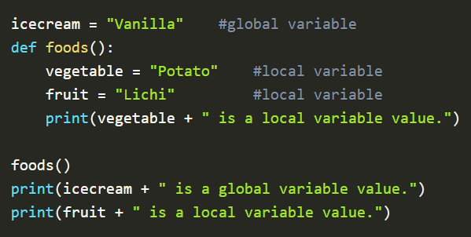
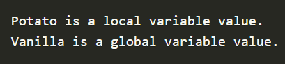

PYTHON VARIABLES
- Variable name can only contain alpha-numeric characters and underscores (A-z, 0-9, and _ )
- Variable name must start with a letter or the underscore character.
- Variables are case sensitive.
- Variable name cannot start with a number.
Variables are containers that store information that can be manipulated and referenced later by the programmer within the code.
In python, the programmer does not need to declare the variable type explicitly, we just need to assign the value to the variable.
Example:

It is always advisable to keep variable names descriptive and to follow a set of conventions while creating variables:
Example:

Sometimes, a multi-word variable name can be difficult to read by the reader. To make it more readable, the programmer can do the following:
Example:

Scope of variable:
The scope of the variable is the area within which the variable has been created. Based on this a variable can either have a local scope or a global scope.
A. Local Variable:
A local variable is created within a function and can be only used inside that function. Such a variable has a local scope.
Example:

Output :

B. Global Variable:
A global variable is created in the main body of the code and can be used anywhere within the code. Such a variable has a global scope.
Example:

Output :
